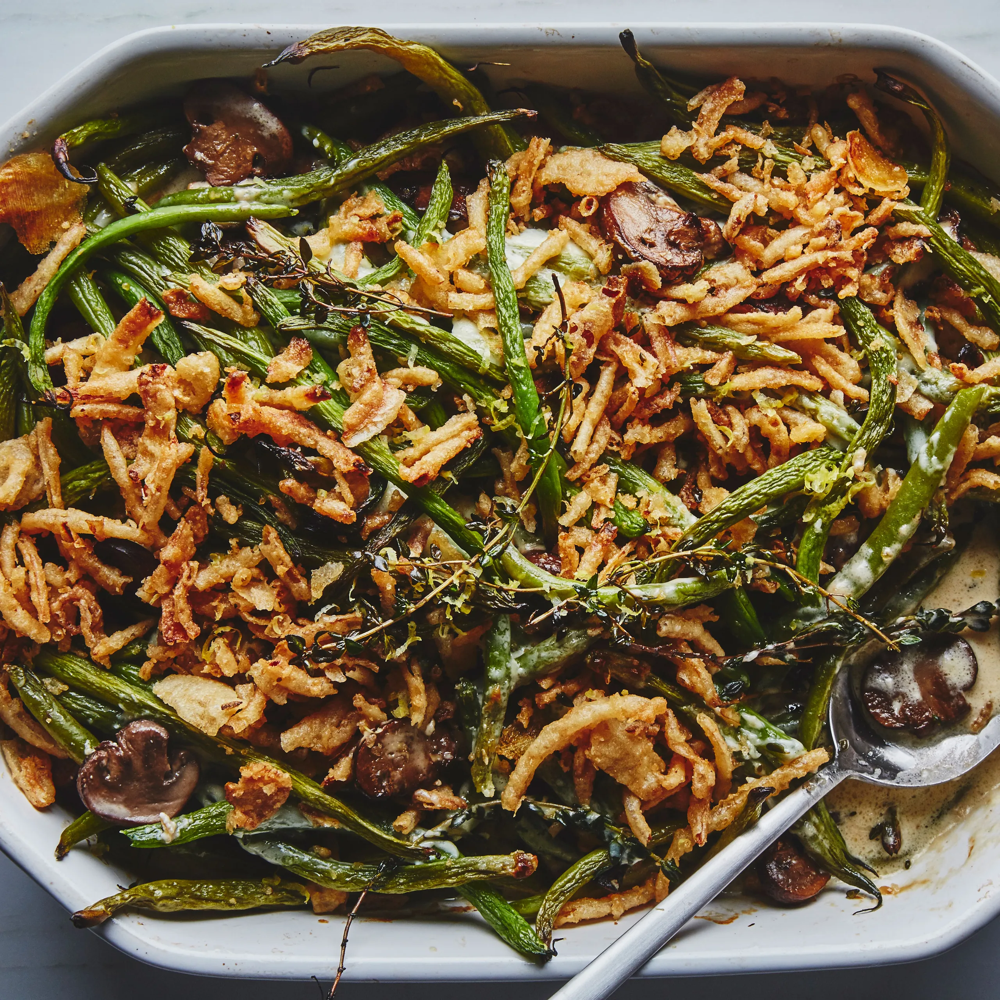

Green Bean Casserole

Image of a green bean casserole
A green bean casserole makes the Thanksgiving holiday complete. This version can be done in no time.
Ingredients
- Green beans: This easy green bean casserole starts with two drained cans of green beans.
- Canned soup: A can of condensed cream of mushroom soup creates a creamy texture and adds savory flavor.
- Cheese: This recipe calls for shredded Cheddar chesse. Use sharp, mild, or a blend of both.
- French-fried onions: The green bean casserole gets its crunch from a French-fried onion topping.
- Optional ingredients: Crumbled bacon, sauteed mushrooms or onions, garlic, Parmesan cheese, black pepper.
Steps
- Mix the beans and soup in a microwave-safe bowl and microwave until warm.
- Stir in half the cheese. Microwave until melted and well blended.
- Transfer to a prepared baking dish. Top with fried onions and remaining cheese.
- Bake in the preheated oven until the cheese is melted and the onions are brown.